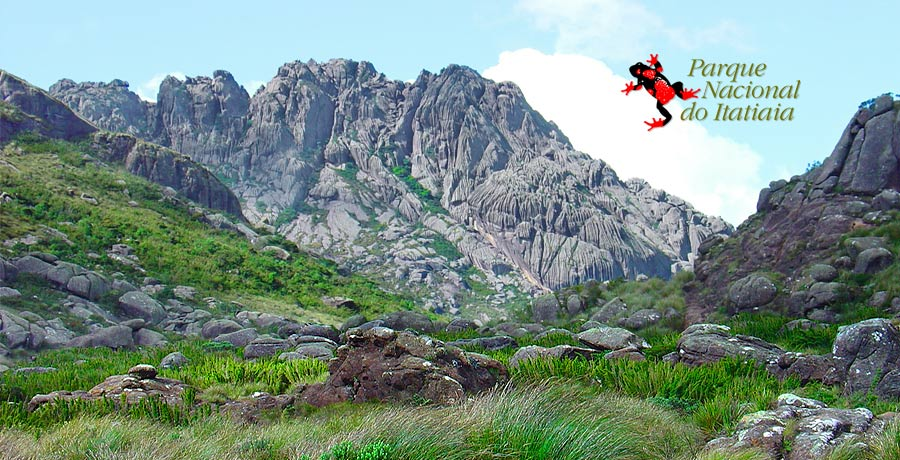

Neste artigo, vamos nos aventurar pela vastidão da Amazônia, a maior floresta tropical do mundo. Descubra a riqueza da biodiversidade amazônica e leia mais sobre a importância da preservação desse ecossistema único.
Mergulhando nos Recifes de Coral
Assista a este incrível vídeo da BBC Earth que nos leva a uma jornada pelo Great Barrier Reef, lar de uma incrível diversidade de vida marinha. Explore os corais coloridos e os habitantes fascinantes desses ecossistemas subaquáticos e leia mais.
Parque Nacional do Itatiaia

Neste artigo, vamos nos aventurar pela vastidão da Itatiaia Conheça primeiro Parque Nacional estabelecido no Brasil. Descubra a riqueza da biodiversidade da serra itatiaia e leia mais descubra quem somos.
Serra Da Canastra
Assista a este incrível vídeo da Serra da Canastra em Minas Gerais Reef, Conheça varias cachoeiras para se apaixonar. Explore as lindas cachoeiras e os habitantes fascinantes leia mais.